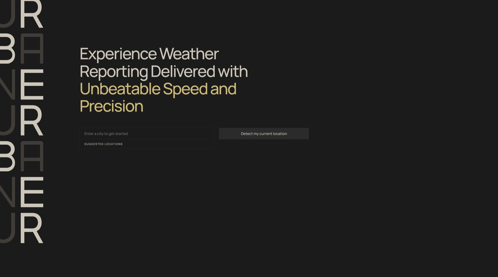

01
Independent · Product Engineering
Urbane Weather
A granular weather experience pairing live NOAA radar with a customizable, deliberately minimal dashboard.
Somewhere above the clouds
Portfolio · 2026
Software Developer
Based in San Luis Obispo

Independent · Product Engineering
A granular weather experience pairing live NOAA radar with a customizable, deliberately minimal dashboard.
AWS Cal Poly DxHub · AI Engineering
An authority-aware property tax assistant that retrieves from a legal knowledge graph and returns source-grounded answers.
AWS Cal Poly DxHub · Full-stack Engineering
A real-time operations surface for monitoring teams, progress, checkpoint photos, and live location data during campus hunts.
Have a project in mind? · 04